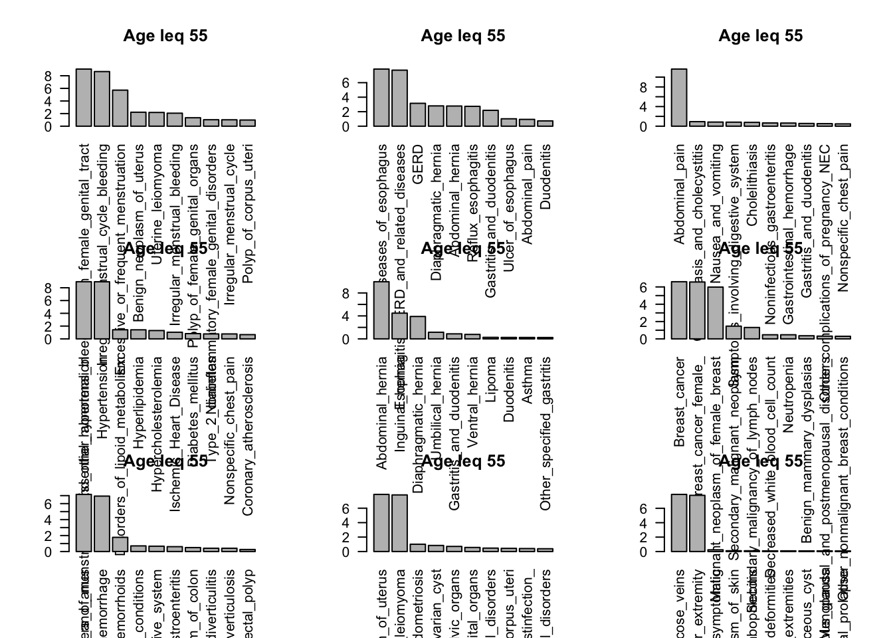
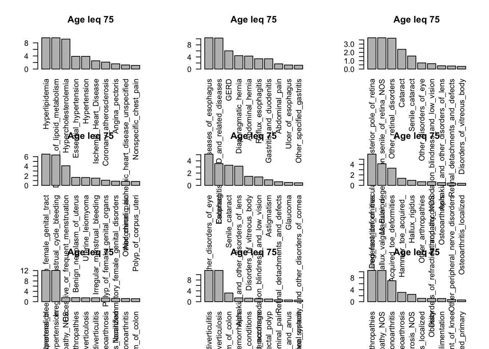
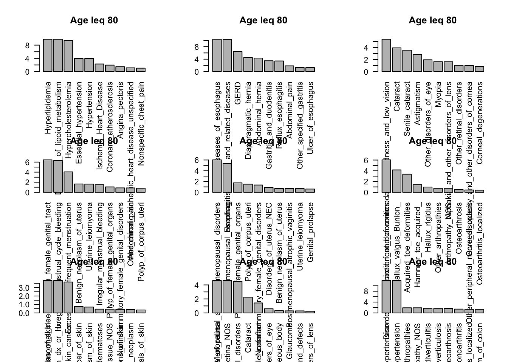
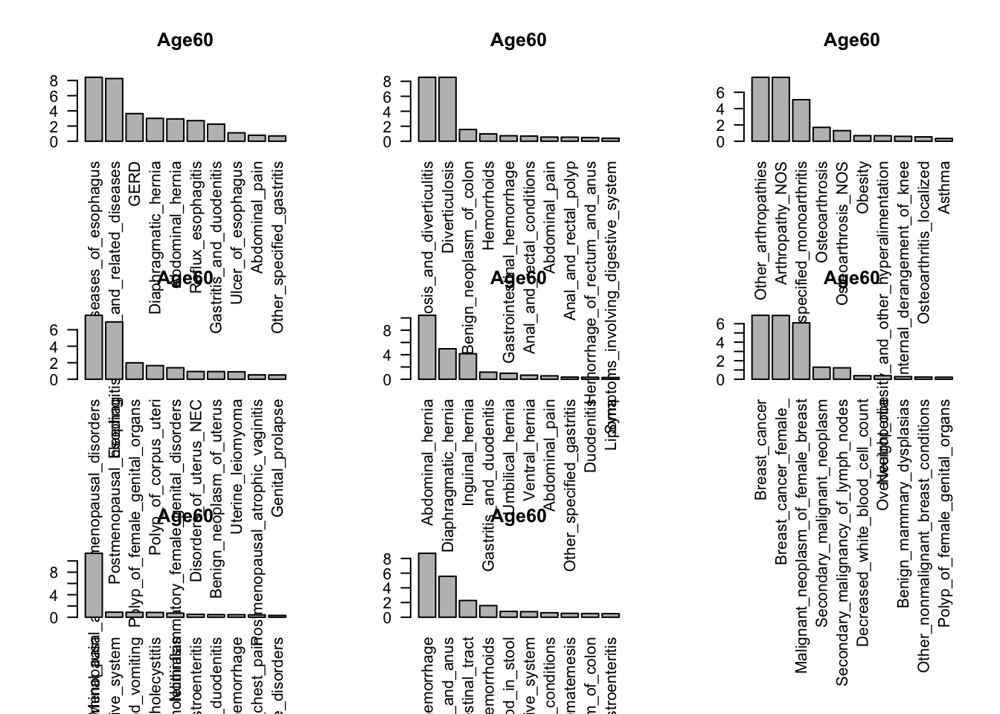
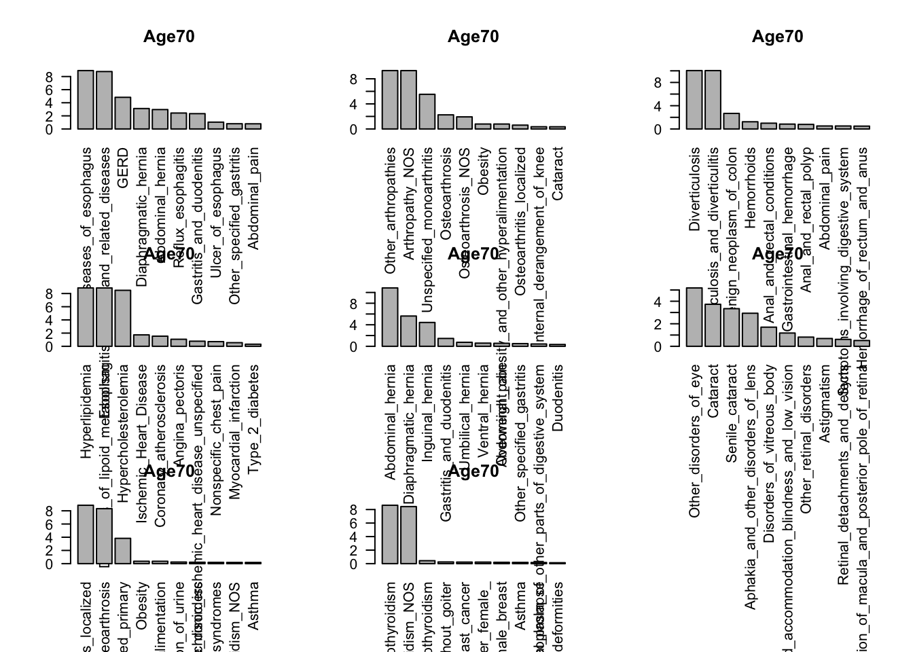

flashier_nmg
2023-12-18
Last updated: 2023-12-18
Checks: 6 1
Knit directory: ~/multistate2/
This reproducible R Markdown analysis was created with workflowr (version 1.7.1). The Checks tab describes the reproducibility checks that were applied when the results were created. The Past versions tab lists the development history.
The R Markdown file has unstaged changes. To know which version of
the R Markdown file created these results, you’ll want to first commit
it to the Git repo. If you’re still working on the analysis, you can
ignore this warning. When you’re finished, you can run
wflow_publish to commit the R Markdown file and build the
HTML.
Great job! The global environment was empty. Objects defined in the global environment can affect the analysis in your R Markdown file in unknown ways. For reproduciblity it’s best to always run the code in an empty environment.
The command set.seed(20230211) was run prior to running
the code in the R Markdown file. Setting a seed ensures that any results
that rely on randomness, e.g. subsampling or permutations, are
reproducible.
Great job! Recording the operating system, R version, and package versions is critical for reproducibility.
Nice! There were no cached chunks for this analysis, so you can be confident that you successfully produced the results during this run.
Great job! Using relative paths to the files within your workflowr project makes it easier to run your code on other machines.
Great! You are using Git for version control. Tracking code development and connecting the code version to the results is critical for reproducibility.
The results in this page were generated with repository version a454652. See the Past versions tab to see a history of the changes made to the R Markdown and HTML files.
Note that you need to be careful to ensure that all relevant files for
the analysis have been committed to Git prior to generating the results
(you can use wflow_publish or
wflow_git_commit). workflowr only checks the R Markdown
file, but you know if there are other scripts or data files that it
depends on. Below is the status of the Git repository when the results
were generated:
Ignored files:
Ignored: .DS_Store
Ignored: .Rproj.user/
Ignored: analysis/.DS_Store
Ignored: code/.DS_Store
Ignored: data/
Ignored: lesliepics/.DS_Store
Ignored: output/
Ignored: plots/.DS_Store
Unstaged changes:
Modified: analysis/flash2.Rmd
Note that any generated files, e.g. HTML, png, CSS, etc., are not included in this status report because it is ok for generated content to have uncommitted changes.
These are the previous versions of the repository in which changes were
made to the R Markdown (analysis/flash2.Rmd) and HTML
(docs/flash2.html) files. If you’ve configured a remote Git
repository (see ?wflow_git_remote), click on the hyperlinks
in the table below to view the files as they were in that past version.
| File | Version | Author | Date | Message |
|---|---|---|---|---|
| Rmd | a454652 | Sarah Urbut | 2023-12-18 | update |
| html | a454652 | Sarah Urbut | 2023-12-18 | update |
Age up to and including
Here we will examine the sparse factor analysis of individuals who receive a code at the age under each plot indicated
#remotes::install_github("willwerscheid/flashier", ref = "sparse_tensors")
library(flashier)
library(data.table)
library(Matrix)
filepath="~/Library/CloudStorage/Dropbox-Personal/pheno_dir/"
df.phecode.wide=readRDS("~/Library/CloudStorage/Dropbox-Personal/phecode/df.phecode.wide.rds")
#df.phecode.wide[is.na(df.phecode.wide)]=0
dfw=df.phecode.wide[,-c(1:5)]
age_cutoffs <- seq(40, 90, by = 5)
## for age 40 we specify that
for(i in 1:length(age_cutoffs)){
dat=df.phecode.wide[,-c(1:5)]
age_threshold=age_cutoffs[i]
print(age_threshold)
dat[, (1:ncol(dat)) := lapply(.SD, function(x) ifelse(!is.na(x) & x < age_threshold, 1, 0))]
#install.packages("flashier")
X=as.matrix(dat)
#install.packages("flashier")
## remove individuals never phenotyped
## for 40 and 45:
X=X[,which(colSums(X)>0)]
#X=X[,which(colSums(X)>100)]
X=X[which(rowSums(X)>0),]
X=Matrix(X,sparse = T)
print(dim(X))
f2=flashier::flash(data = X,ebnm_fn = c(ebnm_point_exponential,ebnm_point_exponential),var_type = 2,greedy_Kmax = 10)
rm(X)
rm(dat)
saveRDS(f2,paste0("~/Library/CloudStorage/Dropbox-Personal/new_flash_by_age/flash_age",age_threshold,".rds"))
}Now let’s plot:
age_cutoffs <- seq(40, 90, by = 5)
K = 10
for (i in 1:length(age_cutoffs)) {
age_threshold = age_cutoffs[i]
f = readRDS(
paste0(
"~/Library/CloudStorage/Dropbox-Personal/new_flash_by_age/flash_age",
age_threshold,
".rds"
)
)
par(mfrow = c(3, 3))
for (k in 2:f$n_factors) {
barplot(head(sort(f[["F_pm"]][, k], decreasing = T), n = 20),
las = 2,
main = paste("Age leq", age_threshold))
}
}
| Version | Author | Date |
|---|---|---|
| a454652 | Sarah Urbut | 2023-12-18 |
| Version | Author | Date |
|---|---|---|
| a454652 | Sarah Urbut | 2023-12-18 |

| Version | Author | Date |
|---|---|---|
| a454652 | Sarah Urbut | 2023-12-18 |

| Version | Author | Date |
|---|---|---|
| a454652 | Sarah Urbut | 2023-12-18 |

| Version | Author | Date |
|---|---|---|
| a454652 | Sarah Urbut | 2023-12-18 |

| Version | Author | Date |
|---|---|---|
| a454652 | Sarah Urbut | 2023-12-18 |

| Version | Author | Date |
|---|---|---|
| a454652 | Sarah Urbut | 2023-12-18 |

| Version | Author | Date |
|---|---|---|
| a454652 | Sarah Urbut | 2023-12-18 |

| Version | Author | Date |
|---|---|---|
| a454652 | Sarah Urbut | 2023-12-18 |

| Version | Author | Date |
|---|---|---|
| a454652 | Sarah Urbut | 2023-12-18 |
| Version | Author | Date |
|---|---|---|
| a454652 | Sarah Urbut | 2023-12-18 |
All ages
We can also do for all, but we’ll need to first remove rows with 0s and binarize the matrix such as non-zero values are 1 and zero values are 0.
Recall we shall keep a non-negative prior on the factors and loadings,
df.phecode.wide=readRDS("~/Library/CloudStorage/Dropbox-Personal/phecode/df.phecode.wide.rds")
dfw=df.phecode.wide[,-c(1:5)]
dfw[!is.na(dfw)]=1
dfw[is.na(dfw)]=0
X=as.matrix(dfw)
#install.packages("flashier")
X=X[,which(colSums(X)>500)]
X=X[which(rowSums(X)>0),]
X=Matrix(X,sparse = T)
K=10
f2=flashier::flash(data = X,ebnm_fn = c(ebnm_point_exponential,ebnm_point_exponential),var_type = 2,greedy_Kmax = K)Here we make no restriction and examine the top 20 variable loadings:
f = readRDS("~/Library/CloudStorage/Dropbox-Personal/factor_run10.rds")
par(mfrow=c(3,3))
for(k in 2:10){
barplot(head(sort(f[["F_pm"]][,k],decreasing = T),n=20),las=2)
}
| Version | Author | Date |
|---|---|---|
| a454652 | Sarah Urbut | 2023-12-18 |
Group by age
looking at the codes that occur exactly at that age group
#remotes::install_github("willwerscheid/flashier", ref = "sparse_tensors")
df.phecode.wide=readRDS("~/Library/CloudStorage/Dropbox-Personal/phecode/df.phecode.wide.rds")
#df.phecode.wide[is.na(df.phecode.wide)]=0
dfw=df.phecode.wide[,-c(1:5)]
age_cutoffs <- seq(40, 90, by = 10)
## for age 40 we specify that
for(i in 2:length(age_cutoffs)){
dat=df.phecode.wide[,-c(1:5)]
age_threshold=age_cutoffs[i]
min=ifelse(i==1,0,age_cutoffs[i-1])
print(c(min,age_threshold))
dat[, (1:ncol(dat)) := lapply(.SD, function(x) ifelse(!is.na(x) & min < x & x < age_threshold, 1, 0))]
#install.packages("flashier")
X=as.matrix(dat)
#install.packages("flashier")
## remove individuals never phenotyped
## for 40 and 45:
X=X[,which(colSums(X)>0)]
#X=X[,which(colSums(X)>100)]
X=X[which(rowSums(X)>0),]
X=Matrix(X,sparse = T)
print(dim(X))
f2=flashier::flash(data = X,ebnm_fn = c(ebnm_point_exponential,ebnm_point_exponential),var_type = 2,greedy_Kmax = 10)
rm(X)
rm(dat)
saveRDS(f2,paste0("~/Library/CloudStorage/Dropbox-Personal/new_flash_by_age/flash_age_exact",age_threshold,".rds"))
}Now let’s plot:
age_cutoffs <- seq(40, 90, by = 10)
K = 10
for (i in 1:length(age_cutoffs)) {
age_threshold = age_cutoffs[i]
f = readRDS(
paste0(
"~/Library/CloudStorage/Dropbox-Personal/new_flash_by_age/flash_age_exact",
age_threshold,
".rds"
)
)
par(mfrow = c(3, 3))
for (k in 2:f$n_factors) {
barplot(head(sort(f[["F_pm"]][, k], decreasing = T), n = 20),
las = 2,
main = paste0("Age", age_threshold))
}
}
| Version | Author | Date |
|---|---|---|
| a454652 | Sarah Urbut | 2023-12-18 |

| Version | Author | Date |
|---|---|---|
| a454652 | Sarah Urbut | 2023-12-18 |

| Version | Author | Date |
|---|---|---|
| a454652 | Sarah Urbut | 2023-12-18 |

| Version | Author | Date |
|---|---|---|
| a454652 | Sarah Urbut | 2023-12-18 |

| Version | Author | Date |
|---|---|---|
| a454652 | Sarah Urbut | 2023-12-18 |

| Version | Author | Date |
|---|---|---|
| a454652 | Sarah Urbut | 2023-12-18 |
sessionInfo()R version 4.3.1 (2023-06-16)
Platform: aarch64-apple-darwin20 (64-bit)
Running under: macOS Sonoma 14.0
Matrix products: default
BLAS: /Library/Frameworks/R.framework/Versions/4.3-arm64/Resources/lib/libRblas.0.dylib
LAPACK: /Library/Frameworks/R.framework/Versions/4.3-arm64/Resources/lib/libRlapack.dylib; LAPACK version 3.11.0
locale:
[1] en_US.UTF-8/en_US.UTF-8/en_US.UTF-8/C/en_US.UTF-8/en_US.UTF-8
time zone: America/New_York
tzcode source: internal
attached base packages:
[1] stats graphics grDevices utils datasets methods base
loaded via a namespace (and not attached):
[1] tidyr_1.3.0 sass_0.4.7 utf8_1.2.4 generics_0.1.3
[5] ashr_2.2-63 stringi_1.8.2 lattice_0.22-5 digest_0.6.33
[9] magrittr_2.0.3 evaluate_0.23 grid_4.3.1 fastmap_1.1.1
[13] rprojroot_2.0.4 workflowr_1.7.1 jsonlite_1.8.7 Matrix_1.6-3
[17] whisker_0.4.1 mixsqp_0.3-48 promises_1.2.1 purrr_1.0.2
[21] fansi_1.0.5 scales_1.2.1 truncnorm_1.0-9 invgamma_1.1
[25] jquerylib_0.1.4 cli_3.6.1 rlang_1.1.2 deconvolveR_1.2-1
[29] munsell_0.5.0 splines_4.3.1 cachem_1.0.8 yaml_2.3.7
[33] ebnm_1.1-2 parallel_4.3.1 tools_4.3.1 SQUAREM_2021.1
[37] softImpute_1.4-1 dplyr_1.1.4 colorspace_2.1-0 ggplot2_3.4.4
[41] httpuv_1.6.12 vctrs_0.6.4 R6_2.5.1 lifecycle_1.0.4
[45] git2r_0.32.0 stringr_1.5.1 fs_1.6.3 trust_0.1-8
[49] irlba_2.3.5.1 pkgconfig_2.0.3 gtable_0.3.4 pillar_1.9.0
[53] bslib_0.6.0 later_1.3.1 glue_1.6.2 Rcpp_1.0.11
[57] highr_0.10 xfun_0.41 tibble_3.2.1 tidyselect_1.2.0
[61] rstudioapi_0.15.0 knitr_1.45 htmltools_0.5.7 rmarkdown_2.25
[65] flashier_1.0.19 compiler_4.3.1 horseshoe_0.2.0